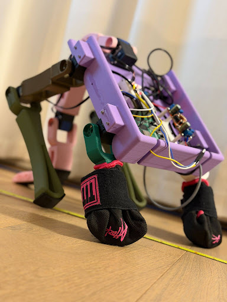
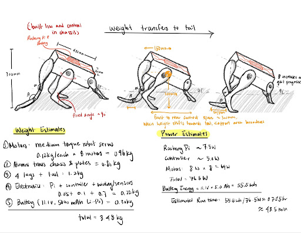
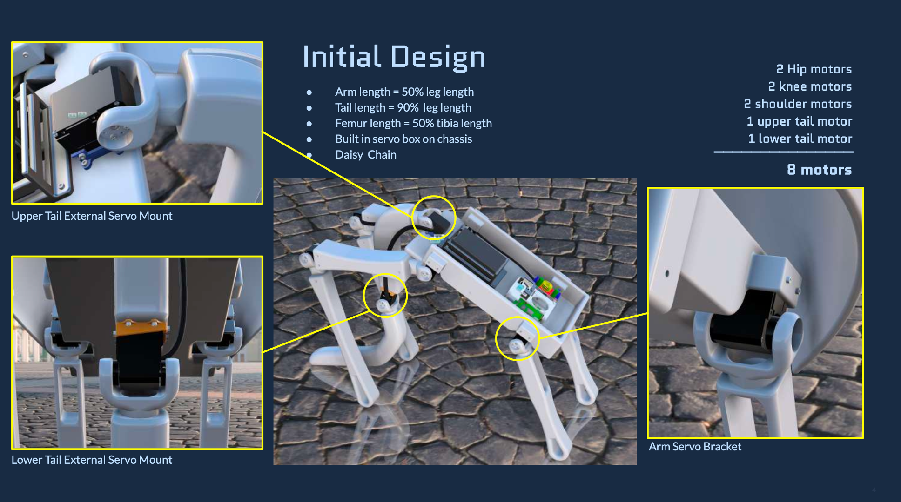
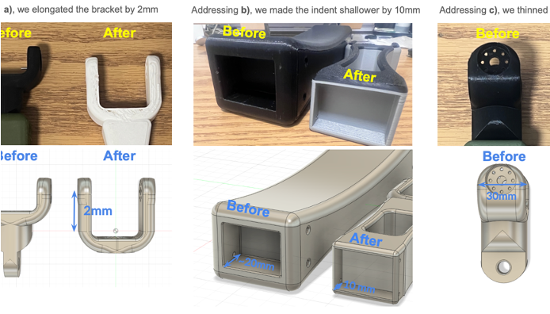
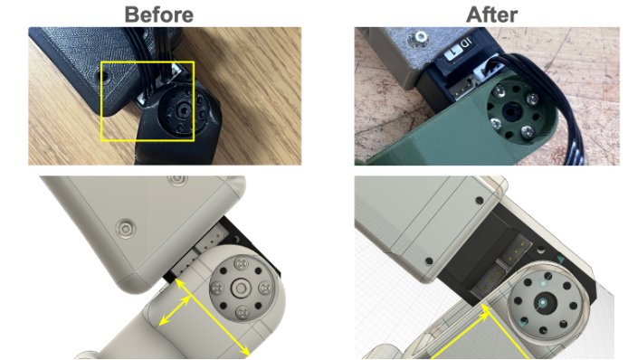
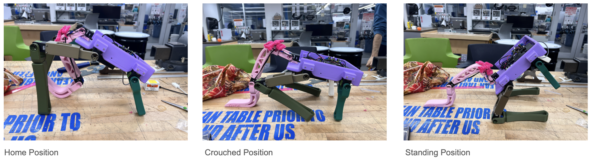

Kangaroobot
Fusion 360 • 3D Print (FDM) • Mechatronics • MuJoCo • Machine Learning • Reinforcement Learning

From Nature to Mechanics: Tail-Assisted Walking from the Kangaroo’s playbook.
Kangaroos use their long and strong tail as their “fifth” limb propel themselves forward while walking. The tail could even support their full body weight when they stand up to kick during fights!
The design objectives are to recreate a kangaroo's stable tail-assisted walking with 8 servos: COM will be slowly transferred to the tail as it progresses, and slowly transferred back to the five points of contact (four legs & tail).
From Sketch to CAD


Kangaroobot's birth
After finalizing the CAD design, FDM 3D printing was used to prototype Kanga. Some reiterations were needed to balance the trade-offs between quality, time, and performance. As a result, Kangaroobot has maximum ROM（240°）across all joints, and has multiple stable configurations.



Kangaroobot came into live!
All electrical components were properly bolted and connected, and careful cable routing was deployed.

Bonus

It learned how to backflip in MuJoCo!